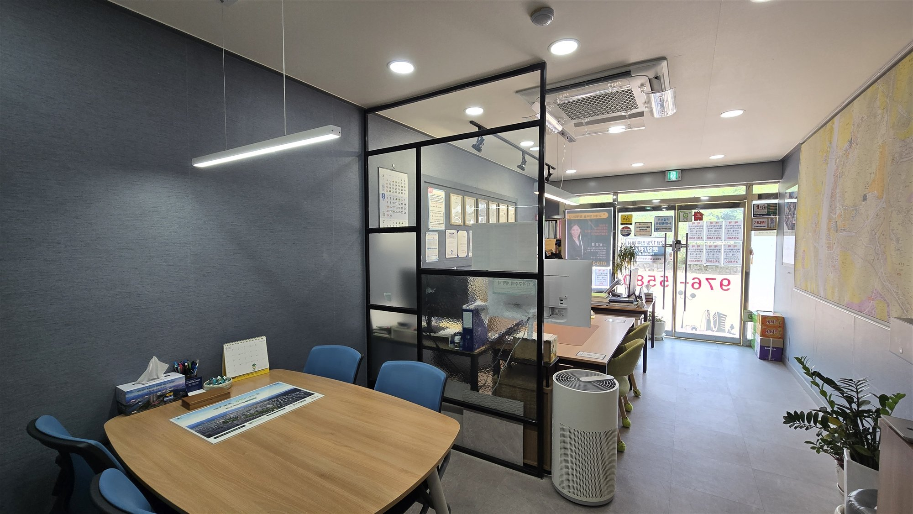

공인중개사 김연실 대표
“매물의 장점만 전달하지 않습니다. 가격, 권리관계, 관리비, 입주 가능일처럼 실제 의사결정에 필요한 내용을 확인하고 설명하겠습니다.”
주요 실무 및 교육 이력
- 회계사무직 11년 근무
- 중개업력 9년 · 현 태왕아너스부동산 대표
- 2021년 네오비 마케팅 실무 과정
- 2024~2025년 청람연구소 경매·특수물건 과정
왜관 부동산의 정직한 기준 · 대표 직접 중개
중개업력 9년, 회계사무직 11년의 실무 경험. 김연실 대표가 상담부터 현장 안내, 조건 조율, 계약 일정 확인까지 직접 담당합니다.
“매물의 장점만 전달하지 않습니다. 가격, 권리관계, 관리비, 입주 가능일처럼 실제 의사결정에 필요한 내용을 확인하고 설명하겠습니다.”
태왕아너스센텀을 중심으로 아파트·주택·원룸·상가의 매매·전세·월세 조건을 구분해 안내합니다.
동·층·향·면적·입주 가능일을 비교하고, 권리관계와 계약 일정을 확인합니다.
생활권과 교통, 학교, 편의시설 등 실제 거주에 필요한 조건을 함께 살펴봅니다.
보증금·월차임·관리비와 포함 항목을 구분하고 옵션과 시설 상태를 확인합니다.
건축물 용도, 임대료, 관리비, 부가세와 시설 인도 범위를 구분해 확인합니다.
현재 거래 가능한 실제 매물을 문의 시점에 다시 확인합니다. 가격·층·면적을 임의로 만들어 게시하지 않습니다.
칠곡군 왜관읍 달오2길 37
희망 예산과 입주 시기를 알려주시면 상담 시점의 실제 매물을 확인해 안내합니다.
매매 조건 문의보증금·월차임·관리비 구분
전세와 월세의 현재 거래 가능 여부, 관리비, 권리관계를 재확인합니다.
임대차 조건 문의왜관읍 생활권
예산과 근무지, 필요한 옵션을 기준으로 실제 가능한 후보를 확인합니다.
원룸 조건 문의업종·면적·입주 시점 확인
희망 업종을 먼저 확인한 뒤 건축물 용도와 실제 영업 가능성을 별도로 검토합니다.
상가 조건 문의※ 매물은 게시 이후에도 계약되거나 조건이 변경될 수 있습니다. 최종 조건은 계약 전 서면과 최신 공적 자료로 확인합니다.
거래를 재촉하기보다 고객이 비교하고 판단할 수 있는 근거를 제공합니다.
대표 1인이 상담, 현장 안내, 조건 조율과 계약 일정 확인을 담당합니다.
구두 설명보다 공부, 계약서, 관리비 내역 등 확인 가능한 자료를 우선합니다.
중개보수 상한요율, 예상 실비와 별도 비용 여부를 계약 전에 구분해 안내합니다.
확인한 조건을 표시하고 변경 또는 계약 완료 매물은 확인 후 수정합니다.
특정 계약을 재촉하지 않으며 비교하고 확인할 시간을 존중합니다.
법률·세무·대출·감정평가는 해당 전문가와 기관의 확인을 권합니다.
상담 접수부터 잔금·인도까지 확인 항목을 단계별로 정리합니다.
거래 유형, 예산, 면적, 입주일과 필수 조건을 확인합니다.
희망조건 체크조건에 맞는 후보와 추가 확인이 필요한 항목을 구분합니다.
거래 가능 여부 확인옵션, 하자, 주차, 소음, 채광과 관리 상태를 살펴봅니다.
현장 체크리스트소유자, 담보권, 면적, 용도와 제한사항을 확인합니다.
공적 자료 확인금액, 계약금·중도금·잔금, 인도일과 특약을 협의합니다.
서면 조건 정리계약서와 확인·설명서를 작성하고 교부 서류를 확인합니다.
중개보수 안내대금 지급, 권리 말소·이전과 열쇠 인도 순서를 확인합니다.
후속 절차 안내칠곡왜관태왕아너스센텀 상가동 103호에서 상담합니다.

방문과 계약 전에 많이 묻는 내용을 먼저 확인해 보세요.
경상북도 칠곡군 왜관읍 달오2길 37, 칠곡왜관태왕아너스센텀 상가동 103호에 있습니다.
태왕아너스센텀을 중심으로 왜관 지역의 아파트, 원룸, 주택, 상가 매매·전세·월세를 중개합니다.
김연실 대표가 상담부터 매물 안내, 조건 조율과 계약 일정 확인까지 직접 담당합니다.
아닙니다. 확인 가능한 정보는 안내하지만 가격 상승, 임대수익, 대출 승인과 낙찰 가능성은 보장하지 않습니다.
게시 후에도 조건이 바뀌거나 계약될 수 있습니다. 문의 시점에 거래 가능 여부와 최신 조건을 다시 확인합니다.
희망 조건을 입력하면 상담 내용을 정리해 복사할 수 있습니다. 개인정보는 이 화면에서 외부로 전송되지 않습니다.
복사한 내용을 문자 또는 네이버 스마트플레이스 문의에 붙여 넣어 주세요.